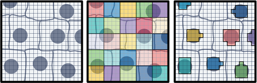
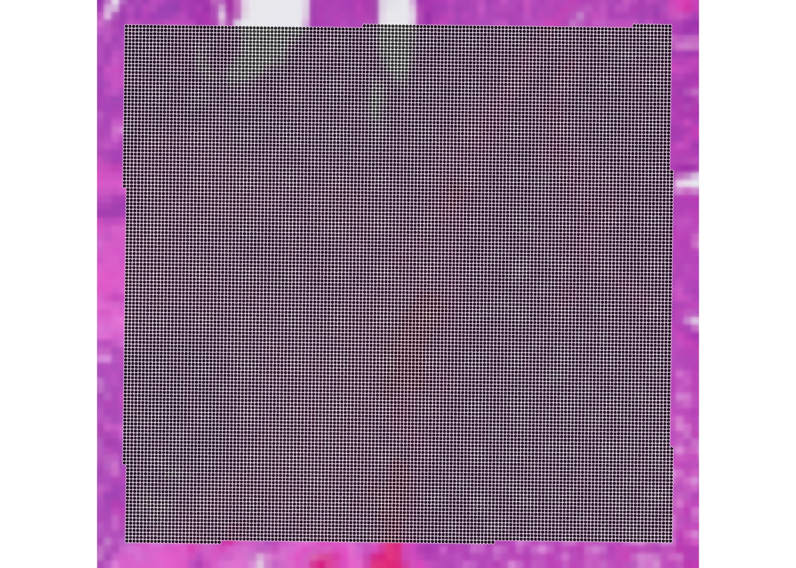
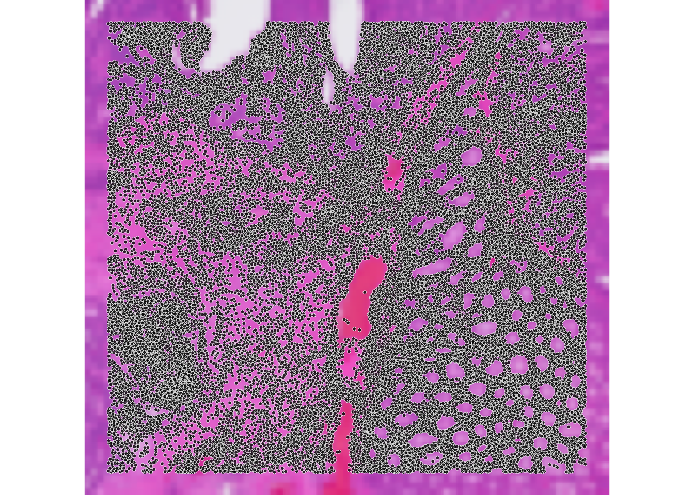
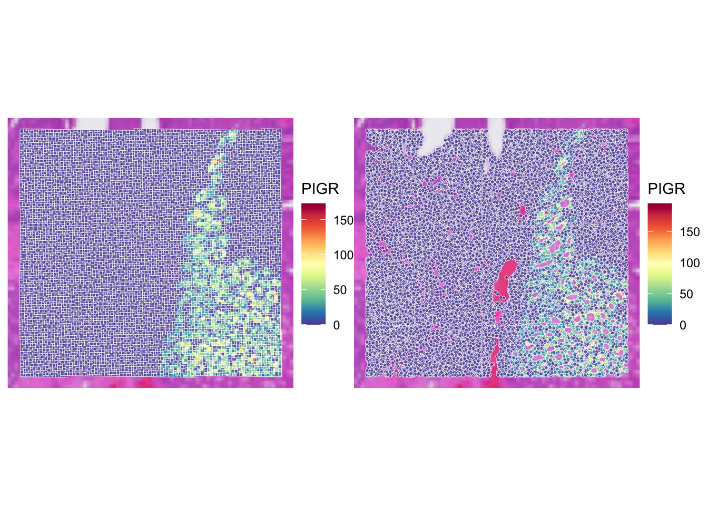
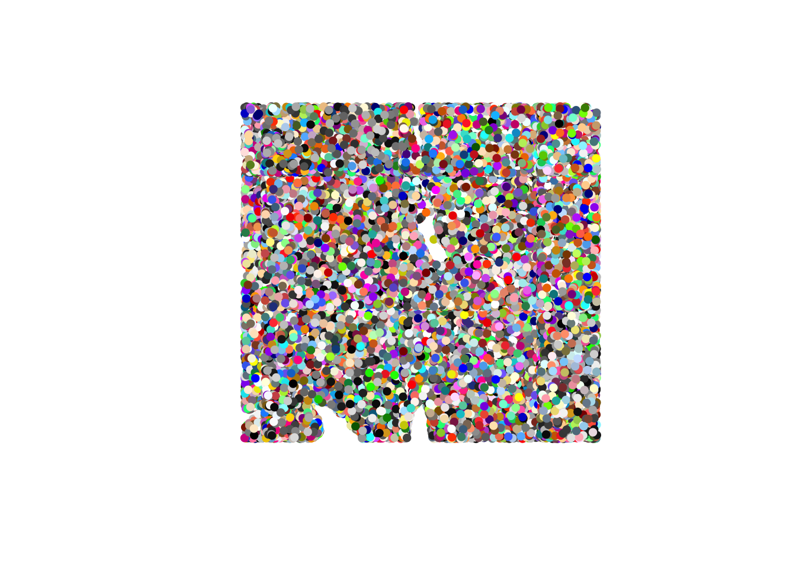
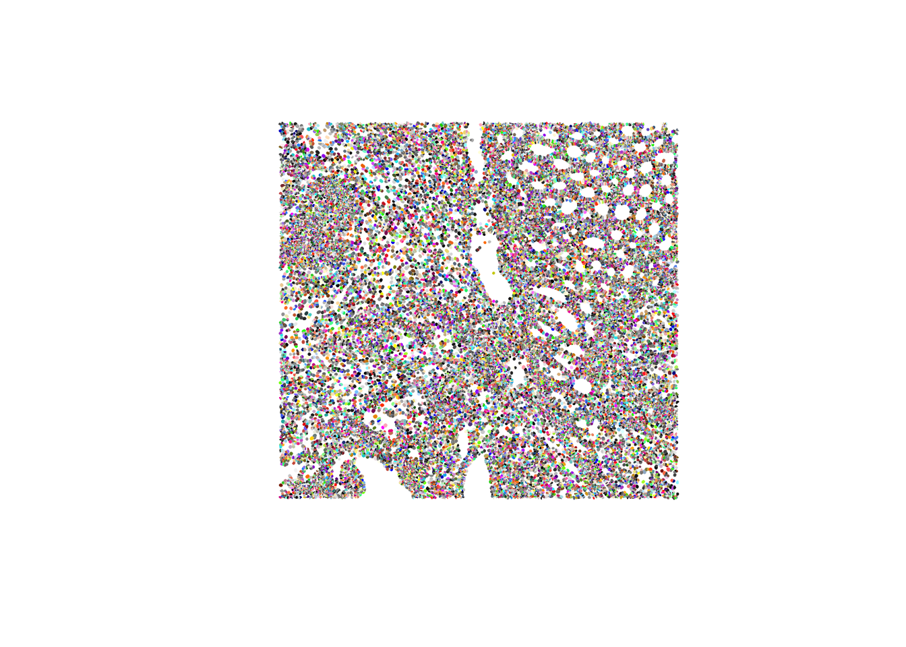
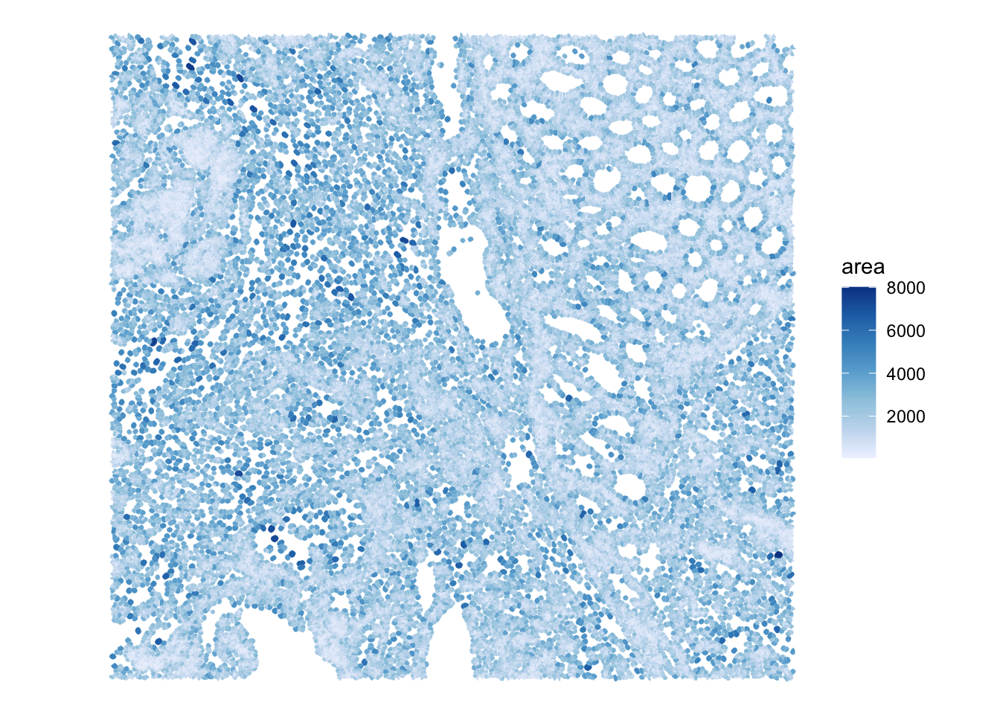
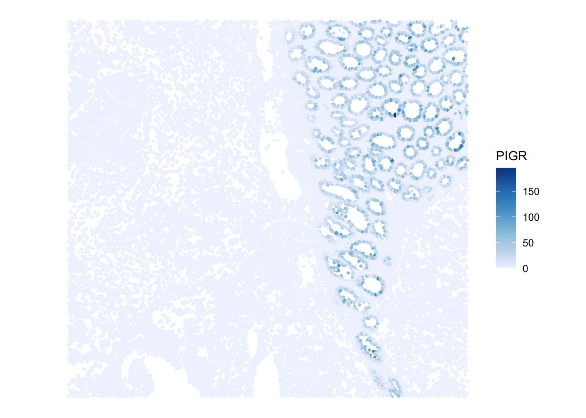
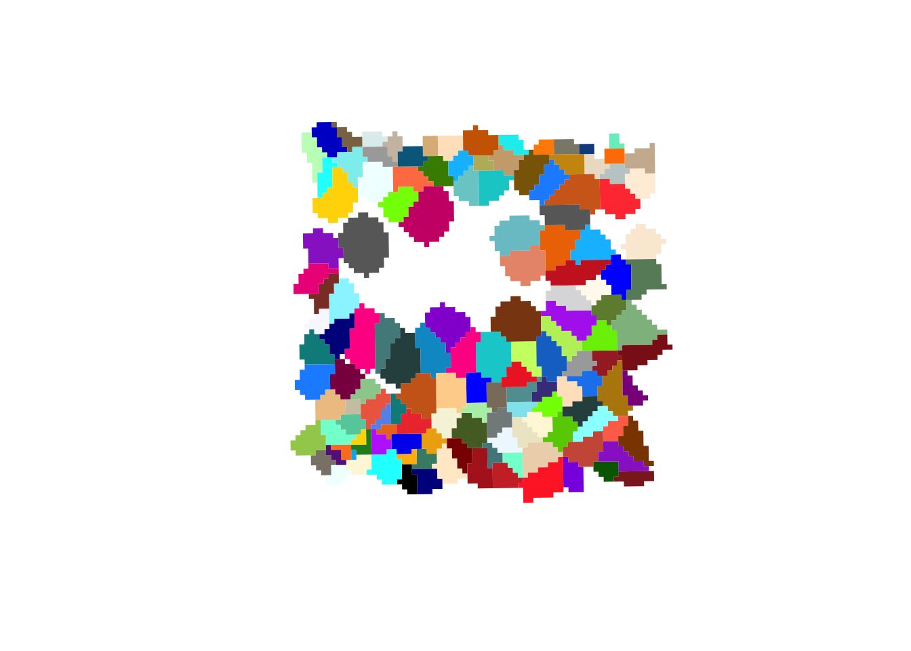
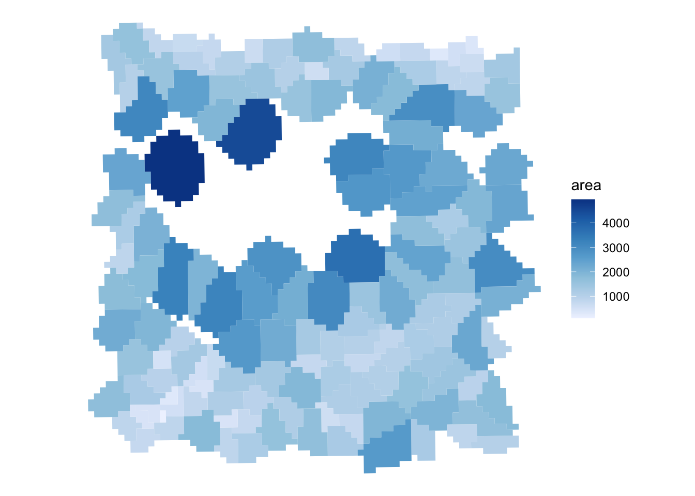

library(scuttle)
library(sf)
library(arrow)
library(dplyr)
library(tidyr)
library(ggplot2)
library(patchwork)
library(SpatialExperiment)
library(SpatialFeatureExperiment)
library(Voyager)
library(VisiumIO)
library(ggspavis)
library(HDF5Array)
library(alabaster.base)
library(alabaster.sfe)
library(fs)Exercise 1C: SpatialFeatureExperiment - VisiumHD segmented
Learning Objectives
By the end of this exercise, you will be able to:
- Load and manipulate Visium HD segmented data using
SpatialExperimentandSpatialFeatureExperimentobjects. - Compare the data structure and spatial coordinates of binned and segmented Visium HD data.
- Visualize gene expression in both binned and segmented data to understand the differences in resolution and spatial representation.
- Save and export the processed data for downstream analysis.
Libraries
Finally, we will work with the Visium HD segmented output. This data corresponds to the same sample and region of interest as the binned data from Exercise 1A, but instead of being binned, it contains the output of cell segmentation. Since Space Ranger version 4, the output of cell segmentation is available as an optional output of the pipeline, and it contains the coordinates of the segmented cells and their boundaries.
Data download
options(timeout = 2000)
if (!dir.exists("data/segmented_outputs/")) {
dir.create("data", showWarnings = FALSE)
download.file(
url = "https://cf.10xgenomics.com/samples/spatial-exp/4.0.1/Visium_HD_Human_Colon_Cancer/Visium_HD_Human_Colon_Cancer_segmented_outputs.tar.gz",
destfile = "data/Visium_HD_Human_Colon_Cancer_segmented_outputs.tar.gz",
mode = "wb"
)
untar(
tarfile = "data/Visium_HD_Human_Colon_Cancer_segmented_outputs.tar.gz",
exdir = "data/"
)
download.file(
url = "https://cf.10xgenomics.com/samples/spatial-exp/4.0.1/Visium_HD_Human_Colon_Cancer/Visium_HD_Human_Colon_Cancer_barcode_mappings.parquet",
destfile = "data/segmented_outputs/Visium_HD_Human_Colon_Cancer_barcode_mappings.parquet",
mode = "wb"
)
file.remove("data/Visium_HD_Human_Colon_Cancer_segmented_outputs.tar.gz")
} else {
message("Data exists, please proceed to next steps!")
}
ImportantExercise 1
- Which class do you think should be used to store the Visium HD segmented data?
SpatialExperimentas we used in Exercise 1A orSpatialFeatureExperimentas we used in Exercise 1B? - What does the data for each segmented cell represent? What is the binning strategy? What are the potential limitations?
TipAnswer
Since segmented data contains cell boundaries, the coordinates of the segmented cells are not limited to the spot coordinates as in the binned data. Therefore, we will use
SpatialFeatureExperimentto work with the segmented data, as it allows us to store and visualize spatial features such as cell boundaries, as we did for the Xenium data in Exercise 1B.SpatialExperimentis more suitable for binned data where the coordinates correspond to the spot centroids on a regular grid and there are no additional spatial features to store.The Visium HD still captures the data on 2x2 µm bins. These are partitioned into larger bins based on the cell they correspond to (see Figure below). The partitioning of aggregated bins mimics single-cell data since the UMI counts are reported per segmented cell basis.

One limitation is that a bin can overlap more than one cell, so the assignment of the transcripts captured would be ambiguous. Of course this approach relies also on the quality of the segmentation mask.
Here we will proceed in two steps:
- We start reading the object into a SpatialExperiment object and subset it to the region of interest, as we have done for Visium HD binned data in the previous exercises. This allows a quick comparison of the two types of processing for the same slide
- We then convert the object to create a SpatialFeatureExperiment object and add the cell segmentation information to it
Import into a SpatialExperiment object and subset
# Define the region of interest
roi_visium <- c(
xmin = 49000,
xmax = 58000,
ymin = 7500,
ymax = 16000
)
roi_visium xmin xmax ymin ymax
49000 58000 7500 16000 # Read the segmented output into a SpatialExperiment object
spe_seg <- TENxVisiumHD(
segmented_outputs = "data/segmented_outputs/",
processing = "raw",
format = "h5",
images = "lowres"
) |>
import()
# Use unique Symbol for rownames
rownames(spe_seg) <- uniquifyFeatureNames(
ID = rowData(spe_seg)$ID,
names = rowData(spe_seg)$Symbol
)
spe_segclass: SpatialExperiment
dim: 39125 220704
metadata(3): resources spatialList cellseg
assays(1): counts
rownames(39125): DDX11L2 MIR1302-2HG ... DEPRECATED_ENSG00000291096
DEPRECATED_TRIM16L
rowData names(3): ID Symbol Type
colnames(220704): cellid_000000003-1 cellid_000000004-1 ...
cellid_000268813-1 cellid_000268814-1
colData names(1): sample_id
reducedDimNames(0):
mainExpName: Gene Expression
altExpNames(0):
spatialCoords names(2) : pxl_col_in_fullres pxl_row_in_fullres
imgData names(4): sample_id image_id data scaleFactor# Subset to the region of interest
spe_seg <- spe_seg[, spatialCoords(spe_seg)[, 1] >= roi_visium[["xmin"]] &
spatialCoords(spe_seg)[, 1] <= roi_visium[["xmax"]] &
spatialCoords(spe_seg)[, 2] >= roi_visium[["ymin"]] &
spatialCoords(spe_seg)[, 2] <= roi_visium[["ymax"]]]Load the previous binned object for comparison:
spe <- loadHDF5SummarizedExperiment(dir="results/day1/", prefix="01.1a_spe_")
ImportantExercise 2
Compare the elements in the colnames of the two objects, what do they represent? How many elements are there in each object?
TipAnswer
colnames(spe) |> head()[1] "s_016um_00144_00175-1" "s_016um_00204_00145-1" "s_016um_00237_00273-1"
[4] "s_016um_00191_00159-1" "s_016um_00245_00233-1" "s_016um_00116_00279-1"ncol(spe)[1] 22419colnames(spe_seg) |> head()[1] "cellid_000080404-1" "cellid_000080411-1" "cellid_000080412-1"
[4] "cellid_000080429-1" "cellid_000080439-1" "cellid_000080443-1"ncol(spe_seg)[1] 34874The object from exercise 1A contains bin IDs, while the new object contains cell IDs. The number of bins is different from the number of cells in the segmented object, since the segmentation process can lead to a different number of cells compared to the number of bins in the same region of interest.
We can compare visually the spatial coordinates of the two objects:
plotVisium(spe, zoom=T)
plotVisium(spe_seg, zoom=T)
ImportantExercise 3
Compare the expression of PIGR gene in the two objects usign the function plotVisium() (as previously done in exercise 1A). What do you observe?
TipAnswer
p_vis <- plotVisium(spe,
annotate = "PIGR",
assay = "counts",
zoom = TRUE,
point_size = 1,
point_shape = 22)
p_vis_seg <- plotVisium(spe_seg,
annotate = "PIGR",
assay = "counts",
zoom = TRUE,
point_size = 1,
point_shape = 21)
p_vis + p_vis_seg
Using visium HD segmented data allows us to have a more detailed view of the tissue, as we are not limited to the resolution of the bins. The x and y coordinates of the SpatialExperiment object corresponds to the centroids of the cells.
We can also have access to the full segmentation of the cells (i.e., the boundaries of each segmented cell), but contrary to the SpatialFeatureExperiment, this cannot be stored natively in a slot of the SpatialExperiment object, so it is stored in the metadata of the object.
Create a SpatialFeatureExperiment object
In order to manipulate the segmentation in an easier way, we create a SpatialFeatureExperiment object, which allows us to store and visualize spatial features (e.g., see the colGeometries() function used in Exercise 1B). We need to add the cell segmentation boundaries to the list of geometries.
sfe_seg <- toSpatialFeatureExperiment(spe_seg)
colGeometries(sfe_seg)List of length 1
names(1): centroids## Extract cell segmentation boundaries from the metadata.
seg <- metadata(sfe_seg)$cellseg
## This was not subsetted to the ROI so we need to do the filtering. The cells are in the same order as the initial unfiltered SpatialExperiment
seg_coords <- st_coordinates(st_centroid(seg))
seg <- seg[seg_coords[, 1] >= roi_visium[["xmin"]] &
seg_coords[, 1] <= roi_visium[["xmax"]] &
seg_coords[, 2] >= roi_visium[["ymin"]] &
seg_coords[, 2] <= roi_visium[["ymax"]], ]
rownames(seg) <- colnames(sfe_seg)
## Add the geometry to the object
colGeometries(sfe_seg)[["cellSeg"]] <- seg
colGeometries(sfe_seg)List of length 2
names(2): centroids cellSegWe can visualize the geometries with a simple scatterplot:
plot(st_geometry(colGeometries(sfe_seg)[["centroids"]]),
col=rep(colors(), 2),
pch=16)
plot(st_geometry(colGeometries(sfe_seg)[["cellSeg"]]),
col=rep(colors(), 2),
lty=0)
Or these can be used in wrapper functions such as plotSpatialFeature() from the Voyager package and plot information of different features on top:
## Plot the area of the cells. It's easy to calculate it from the geometry using the sf package
sfe_seg$area <- st_area(colGeometries(sfe_seg)[["cellSeg"]])
plotSpatialFeature(sfe_seg,
colGeometryName="cellSeg",
features="area") 
## Plot the expression of PIGR on each segmented cell
plotSpatialFeature(sfe_seg,
colGeometryName="cellSeg",
features="PIGR",
exprs_values = "counts") 
ImportantBONUS: Exercise 3
Plot the cell segmentation mask of very small region of interest on the slide, for example:
roi_zoomed <- c(
xmin = 54500,
xmax = 55000,
ymin = 12500,
ymax = 13000
)What do you observe?
TipAnswer
sfe_zoomed <- sfe_seg[, spatialCoords(sfe_seg)[, 1] >= roi_zoomed[["xmin"]] &
spatialCoords(sfe_seg)[, 1] <= roi_zoomed[["xmax"]] &
spatialCoords(sfe_seg)[, 2] >= roi_zoomed[["ymin"]] &
spatialCoords(sfe_seg)[, 2] <= roi_zoomed[["ymax"]]]
plot(st_geometry(colGeometries(sfe_zoomed)[["cellSeg"]]),
col=rep(colors(), 2),
lty=0)
plotSpatialFeature(sfe_zoomed,
colGeometryName="cellSeg",
features="area")
When zooming in, we can clearly see that 2 um bins make up each cell in the dataset.
Saving the object
In the Exercise 1A we used the function saveHDF5SummarizedExperiment because the count matrix of the SpatialExperiment object is stored on-disk for efficiency.
As you could see above, the SpatialFeatureExperiment includes additional layers, and some of them are also not loaded in memory. This complicates things further and even saving the object with the saveHDF5SummarizedExperiment function does not allow to fully re-import it.
A nice way to save the object is to use the alabaster.sfe package, implementing a (language agnostic) format to represent SpatialFeatureExperiment on disk (see the ArtifactDB project https://github.com/ArtifactDB). See the package vignette here: https://bioconductor.org/packages/3.23/bioc/vignettes/alabaster.sfe/inst/doc/Overview.html
# The "cellseg" slot of the metadata is problematic, let's remove it because it's now stored as colGeometry slot
metadata(sfe_seg) <- metadata(sfe_seg)[1:2]
# mkdir("results/day1")
alabaster.sfe::saveObject(sfe_seg, "results/day1/01.1c_sfe_visium")
fs::dir_tree("results/day1/01.1c_sfe_visium")results/day1/01.1c_sfe_visium
├── OBJECT
├── _environment.json
├── assays
│ ├── 0
│ │ ├── OBJECT
│ │ └── matrix.h5
│ └── names.json
├── colgeometries
│ ├── 0
│ │ ├── OBJECT
│ │ └── map.parquet
│ ├── 1
│ │ ├── OBJECT
│ │ └── map.parquet
│ └── names.json
├── column_data
│ ├── OBJECT
│ └── basic_columns.h5
├── coordinates
│ ├── OBJECT
│ └── array.h5
├── images
│ ├── 0
│ │ ├── OBJECT
│ │ ├── image.tiff
│ │ └── image.tiff.aux.xml
│ └── mapping.h5
├── other_data
│ ├── OBJECT
│ └── list_contents.json.gz
└── row_data
├── OBJECT
└── basic_columns.h5For the rest of the exercises, we will use this Visium HD segmented object, but feel free to replace by the binned object (Exercise 1A) or the Xenium object (Exercise 1B) to compare the results.